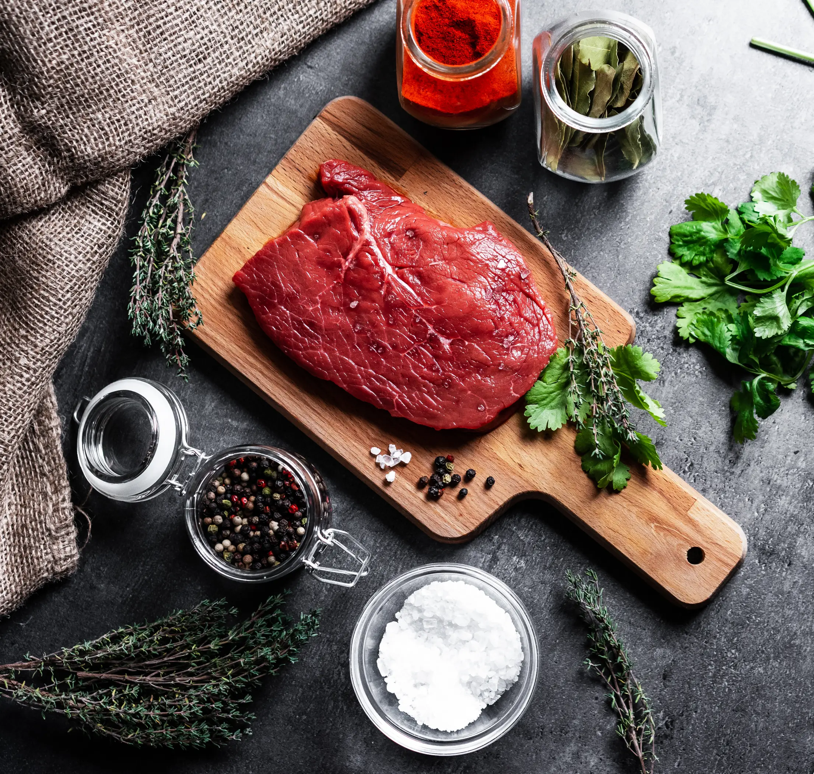

Garlic Pepper Beef
Home
This is definitely my go-to recipe for beef! This is inspired from the Garlic pepper beef sold by Jollibee when I was still in college!
They stopped selling it now but thank goodness to people on Youtube, I found this recipe.

Now, let's get down to business! Or to cooking..
Ingredients
You will need the following:
- 300 g beef
- 1 tbsp oyster sauce
- 2 tbsp dark soy sauce
- 1 tbsp flour
- a lot of ground black pepper
- a lot of garlic
- 1 tbsp butter
- 1 tsp canola oil
- 1 cup mushrooms
- 1 beef cube flavoring
- 1/2 cup water
Steps
Here's what you will do:
- Marinate the beef with oyster sauce, soy sauce, flour and black pepper.
- Set aside for 30 minutes.
- Fry garlic in a pan with the canola oil. Remove once brown.
- On the same pan, fry the marinated beef.
- Once brown, remove the meat. Add butter and beef cube on same pan, then combine.
- Add the beef back to pan, and add water.
- Cook until water is reduced, and add the mushrooms.
- Add fried garlic, and serve!
 Home
Home